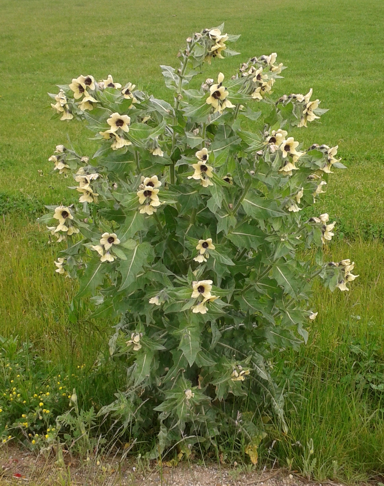
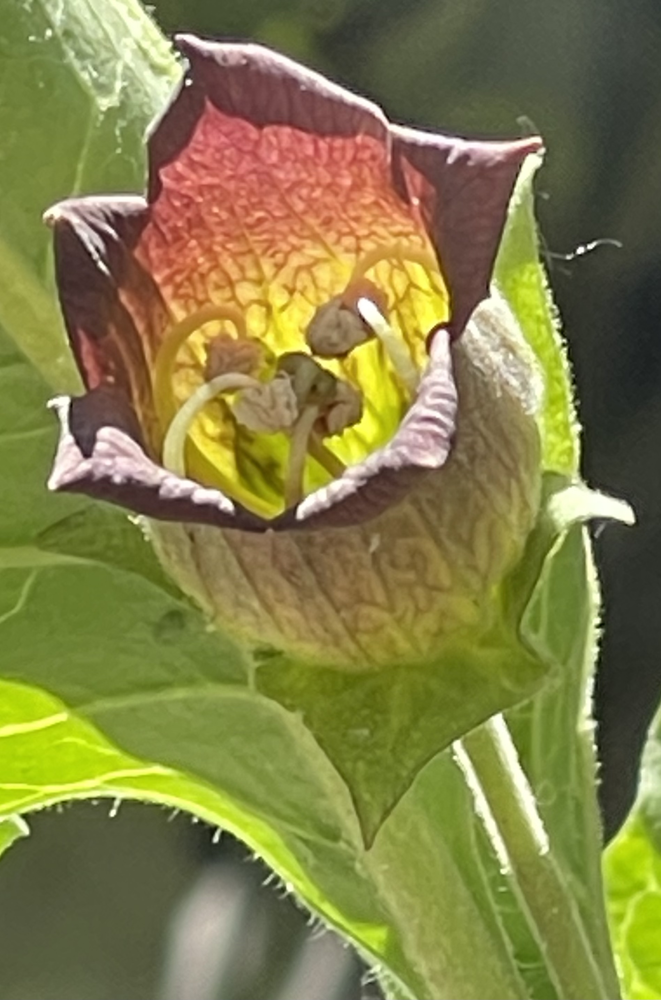

Solanaceae
nightshade family
|  Hyoscyamus niger (henbane) from Wikimedia Commons by Mikenorton - Own work, CC BY-SA 3.0 |
 fruit of H. niger from Wikimedia Commons by Лобачев Владимир - Own work, CC BY-SA 3.0 |
|  Atropa bella-donna (belladonna/deadly nightshade) from Wikimedia Commons by Flobbadob - Own work, CC BY-SA 4.0 |
 Datura wrightii (sacred datura) from Wikimedia Commons by Beyond My Ken - Own work, CC BY-SA 4.0 |
{kind=link}
{kind=link}
botanical characteristics
Botany in a Day, p. 146-8
- growth form
- mostly herbs but sometimes vines, shrubs, or trees
- stems/leaves
- leaves usually alternate with fuzzy leaves and colorless juice
- texture of a petunia leaf is characteristic for many wild members of the family
- leaves usually alternate with fuzzy leaves and colorless juice
- flowers
- usually solitary, bisexual, and regular with 5 united sepals and 5 united petals (rarely, 2-7 of each)
- 5 stamens attached to the petals (rarely, 4-7)
- vary from funnel/trumpet form (e.g., datura) to reflexed with only partially united petals (e.g., tomato)
- reproductive structures
- ovary is positioned superior
- usually 2 united carpels with partition walls forming an equal number of chambers
- tomatoes and peppers highly variable due to breeding
distribution
"Solanaceae", Wikipedia
- originating in South America, Solanaceae now inhabits every continent on Earth except Antarctica
- unique in this regard compared to other families in the order Solanales, which originated primarily in Africa
- the resulting geographic isolation is likely what triggered its initial diversification into a distinct lineage
- from South America, nightshades rapidly colonized the rest of the Americas as they continued to diversify
- spread of nightshades into the Old World happened several times throughout its history
- nightshades spread west over the Pacific into Oceania and east over the Atlantic into Africa
- nightshades reached Eurasia first from North America, and more recently were brought over by humans during the Columbian exchange
ecological roles
"Solanaceae", Wikipedia
- the potato tuber moth (Phthorimaea operculella) is an oligophagous insect that prefers to feed on plants of the family Solanaceae, especially the potato plant (Solanum tuberosum)
- female P. operculella use the leaves to lay their eggs and the hatched larvae will eat away at the mesophyll of the leaf
- after feeding on the foliage, the larvae will then delve down and feed on the tubers and roots of the plant
notes from class, 30 June 2025
- planting Datura plants nearby Solanaceae vegetables like tomatoes can help attract moths away, helping to prevent the moths from destroying the food crops
common pharmacological constituents
Botany in a Day, p. 146-8
- Solanaceae family is rich in alkaloids
- solanine, a bitter glyco-alkaloid found in vegetation and fruits of most species of Solanum, including potatoes
- nicotine, a narcotic alkaloid found in Nicotiana (tobacco)
- scopolamine, an analgesic narcotic alkaloid used to treat seasickness and vertigo found in Datura and other genera
- atropine, an analgesic narcotic historically used to treat nerve gas attacks found in Atropa, Datura, and other genera
- many of these alkaloids are highly toxic
"Solanaceae", Wikipedia
- hundreds of alkaloids are produced by various species of nightshades, including solanine, chaconine, atropine, scopolamine, tomatine, nicotine, capsaicin, and several more
- these are used as a natural pesticide by the plant, disrupting cellular and physiological processes in invading organisms
- mainly targeted against insects, but can also function as fungicides, nematicides, and bactericides
- in high amounts, some alkaloids can also be toxic to humans, but others are sought after for medicinal, recreational, or culinary purposes
"Angiosperm families - Solanaceae Juss.", DELTA
- sugars transported as sucrose (in Datura, Solanum); inulin recorded (Solanum, Gibbs 1974); cyanogenic, or not cyanogenic; alkaloids present (mostly), or absent; anthraquinones detected (Fabiana); polyacetate derived; arbutin absent; iridoids not detected; saponins/sapogenins present, or absent; proanthocyanidins absent; flavonols present, or absent; kaempferol and quercetin (mostly); ellagic acid absent (25 species, 14 genera); ursolic acid present; aluminium accumulation demonstrated (rarely); sieve-tube plastids S-type
patterns in medicinal actions
- many alkaloids in Solanaceae plants are powerful low-dose medicines
- these plants protect themselves from predators with neurotoxin agents; their medicinal applications affect the nervous system
"Solanaceae", Wikipedia
- the alkaloids produced by Solanaceae plants can be used as powerful medicine for the central nervous system in many ways
- reversing the effects of neurotoxicity (many tropane alkaloids)
- relieving pain and sedating the nervous system (e.g., scopolamine, hyoscyanine)
- stimulating the nervous system (e.g., atropine, nicotine)
- activating pain receptors (e.g., capsaicin)
- causing hallucinations (e.g., atropine, scopolamine, hyoscyanine)
- many of these alkaloids are used to treat a wide variety of medical conditions that effect other body systems as well, including the digestive, cardiovascular, and respiratory systems through their effect on the nerves and central nervous system
traditional/cultural uses
Botany in a Day, p. 146-8
- vast cultural importance as popular food crops, espcially from the genera Solanum (tomatoes, potatoes, eggplants), Capsicum (peppers), and Physalis (tomatillos)
- juice of Atropa (called 'belladonna', from the Italian for 'beautiful woman') historically used by Italian women to dilate their pupils to appear more attractive
- European witchcraft heritage of riding broomsticks comes from the hallucinogenic effects of many plants (from genera like Atropa, Datura, Hyoscyamus, and Mandragora), likely in the form of ointment applied to the vaginal tissues
"Solanaceae", Wikipedia
- tobacco plant has been used for centuries as a ritual and recreational drug because of its high nicotine content
Murder, Magic, and Medicine, p. 26-28, 76-82, 98-99
- Solanaceae plants were an invaluable source of poisons, hallucinogens, and medicines for ancient pharmacists
- trio Atropa belladonna (deadly nightshade), Hyoscyamus niger (henbane), and Mandragora officinarum (mandrake) highly associated with magic in Europe
- henbane possibly associated with prophecy vis-á-vis Delphic oracles
- wine adulterated with deadly nightshade possibly used in Bacchanalian orgies in ancient Rome
- numerous mentions of the these herbs in "witches' salves/oyntments"
- reports of vivid episodes of flying, orgiastic adventures, wild rides, frenzied dances while in deep, death-like sleep
- mandrake root used as an aphrodisiac, to enhance fertility, and as a poison
- Datura has a long history of magic and medicine in the Americas and Asia
- Nicotiana used for medicinal divination, as an aphrodisiac, and as a stimulant
warnings
Botany in a Day, p. 146-8
- many plants are highly toxic to humans
- symptoms of toxicity can include unquenchable thirst, dilation of the pupils, delirium, hallucinations, convulsions, coma, and death
"Nightshade and Salicylate Sensitivity", London Clinic of Nutrition
- nightshade foods can promote a reaction in those sensitive to their glycoalkaloids that can include IBS, heartburn, joint pain, skin reactions and altered nerve sensation
- possible link between nightshade vegetables and the pain and inflammation associated with arthritis
extra information
"Solanaceae", Wikiepdia
- name may derive from latin 'sol' for 'sun' (perhaps indicating the sun-loving nature of many species) or from latin 'solare' for 'to soothe' (perhaps indicating analgesic properties)
prominent genera
- Atropa (belladonnas/deadly nightshades)
- Brugmansia (angel's trumpets)
- Capsicum (peppers)
- Datura (jimsonweeds/thornapples/devil's trumpets)
- Hyoscyamus (henbanes)
- Lycium (boxthorn/wolfberry, incl. goji berry)
- Mandragora (mandrakes)
- Nicotiana (tobaccos)
- Petunia (petunias)
- Physalis (husk tomatoes, incl. tomatillo)
- Solanum (nightshades, incl. tomato, potato, eggplant)
- Withania (incl. ashwagandha)
plant highlights
see list of materia medica entries here
Datura spp.
 from Wikimedia Commons by Arkoma29 - Self-photographed, CC BY-SA 4.0 |
common names: datura, jimsonweed, thornapple, devil's trumpet en español: toloache name in Āyurveda: dhatura (धतूरा) |
description
"Datura", Wikipedia
- herbaceous, leafy annuals and short-lived perennials
- leaves are alternate with a lobed or toothed margin
- flowers are erect or spreading (not pendulous like those of Brugmansia), trumpet-shaped; colours vary from white to yellow and pale purple
- fruit is a spiny capsule, splitting open when ripe to release the numerous seeds
distribution
"Datura", Wikipedia
- most species are native to Mexico, though some have disputed native ranges outside the Americas
- D. ferox (native to China), D. metel (native to India and Southeast Asia), and D. leichardthii (native to Australia)
- however these may be early introductions from Central America
medicinal/magical uses
"Datura", Wikipedia
- alkaloids scopolamine and atropine used in numerous medicinal contexts
- belongs to the classic 'witches' weeds', along with deadly nightshade, henbane, and mandrake
- all parts of the plants are toxic, and the genus has a long history of use for causing delirious states and death
- well known as an essential ingredient of magical ointments, potions, and witches' brews, most notably Datura stramonium
- ancient inhabitants of what became central and southern California (Chumash and Tongva peoples) used to ingest datura to commune with deities through visions
- Southern Paiute believe datura can help locate missing objects
- in ancient Mexico, datura also played an important role in the religion of the Aztecs and the practices of their medicine men and necromancers
- reportedly used by the Aztecs for ritual sacrifice and malevolent purposes as well
- in modern-day Mexico, some datura species are still used for sorcery and other occult practices, mostly in the southern region of Veracruz, specifically in the city of Catemaco
- Bernardino de Sahagún, circa 1569: "It is administered in potions in order to cause harm to those who are objects of hatred. Those who eat it have visions of fearful things. Magicians or those who wish to harm someone administer it in food or drink. This herb is medicinal and its seed is used as a remedy for gout, ground up and applied to the part affected."
Murder, Magic, and Medicine, p. 82-84
- combined with Cannabis and wine as an anaesthetic for surgery
- seeds of Datura smoked with Cannabis for pleasure and divinatory purposes
- numerous species used in the Americas for medicine (e.g., treatment of rheumatism) and divination
- used with mezcal as an intoxicant and hallucinogen
- numerous tribes of the American Southwest have folklore associated with the visions induced by Datura
- Carlos Castenada reports a 'flying ointment' containing Datura
- used in contemporary Africa for trials by ordeal and complex puberty rites
The New Age Herbalist, p. 116
- smoked, used to treat asthma
- alkaloids in the plant relax spasms of the bronchioles during an asthma attack
- in therapeutic doses used to control the spasms of Parkinson's disease
- externally to relieve pain of rheumatism and sciatica
notes from class, 30 June 2025
- used by the Yaqui people in Mexico and Central America in coming-of-age rituals for men
- boys take one seed at a time until hallucinations take effect
- not because the toxins build in the body over time (though they may), but because alkaloids are not uniformly distributed throughout the plant, i.e., one seed can have none and another can have a large amount
- me: ritual practices of the Yaqui are extensively catalogued in Castaneda's The Teachings of Don Juan and subsequent writings
preparation methods
- tincture
- oil/salve
- smoke
warnings
"Datura", Wikipedia
- Datura is considered a deliriant
- intoxication typically produces the effects of anticholinergic delirium (usually involving a complete or relative inability to differentiate reality from fantasy); bizarre thoughts, hyperthermia; tachycardia; bizarre, and possibly violent behavior; dry skin; dry mouth; illusions; and severe mydriasis (dilated pupils) with resultant painful photophobia that can last several days
- muscle stiffness, urinary retention, temporary paralysis, disrobing, emotional bluntness, dysphoria, and confusion are often reported, and pronounced amnesia is another commonly reported effect
- psychoactive alkaloids scopolamine and atropine are also both known for their characteristic hyperactive effects and ability to cause stark and dream-like hallucinations
- onset of symptoms generally occurs around 30 to 60 minutes after ingesting the herb; symptoms generally last from 24 to 48 hours, but have been reported in some cases to last two weeks or longer
The New Age Herbalist, p. 116
- overdose will cause double vision, thirst, an urge to urinate but an inability to do so, palpitations, restlessness, confusion, hallucinations
- classified as poisonous by the FDA
- must not be used in pregnancy, prostatic disease, tachycardia, glaucoma, or when taking antidepressants
Nicotiana tabacum
from Wikimedia Commons by Jom / Joachim Müllerchen - Own work, CC BY 2.5 |
common names: tobacco en español: tabaco, hierba santa |
{kind=link}
description
"Nicotiana tabacum", Wikipedia
- sticky haired on all parts
- stems are thick and not very branched
- leaves can be ovate to elliptical
- coronet is white, pink or red, the corolla tube greenish-cream, pink or red
- fruit is a capsule that is narrowly elliptical to egg-shaped
distribution
"Nicotiana tabacum", Wikipedia
- native to tropical and subtropical America
- now widely cultivated worldwide
medicinal/magical uses
"Nicotiana tabacum", Wikipedia | "Tobacco", Wikipedia
- among the ancient Maya, Nicotiana was considered a sacred plant, closely associated with deities of earth and sky, and used for both visionary and therapeutic ends
- contemporary Tzeltal and Tzotzil Maya of Highland Chiapas (Mexico) are bearers of this ethnobotanical inheritance, preserving a rich and varied tradition of Nicotiana use and folklore
- entire tobacco plant is viewed as a primordial medicine and a powerful botanical helper or protector
- depending on the condition to be treated, whole Nicotiana leaves are used alone or in combination with other herbs in the preparation of various medicinal plasters and teas
- in its most common form, fresh or green leaves are ground with slaked lime to produce an intoxicating oral snuff that serves as both a protective and therapeutic agent
- many Native American tribes traditionally grow and use tobacco
- Indigenous people from the Northeast Woodlands cultures have carried tobacco in pouches as a readily accepted trade item
- smoked both socially and ceremonially, such as to seal a peace treaty or trade agreement
- in some Native cultures, tobacco is seen as a gift from the Creator, with the ceremonial tobacco smoke carrying one's thoughts and prayers to the Creator
notes from class, 30 June 2025
- dried tobacco used as an offering to plants when foraging and wildcrafting
preparation methods
- smoke
- powder
- compress/poultice
- infusion
warnings
"Nicotiana tabacum", Wikipedia | "Tobacco", Wikipedia
- tobacco plant readily absorbs heavy metals from the surrounding soil and accumulates them in its leaves
- these heavy metals are readily absorbed into the user's body following smoke inhalation
- smoking tobacco recognized as a cause of cancer, as well as other serious respiratory and circulatory diseases
Capsicum spp.
from Wikimedia Commons by Daniel Risacher - Own work, CC BY-SA 3.0 |
common names: pepper, capsicum, chili en español: ají, chile |
{kind=link}
description
"Capsicum frutescens", Wikipedia
- flowers are typically white, with a greenish white or greenish yellow corolla
- berries typically grow erect and are ellipsoid-conical to lanceoloid shaped
- fruit typically grows a pale yellow and matures to a bright red, but can also be other colors
distribution
"Capsicum frutescens", Wikipedia
- native to Central and South America as well as Mexico
- widely cultivated worldwide for culinary and medicinal use
- listed as 'Least Concern' on the IUCN Red List of Threatened Species
medicinal/magical uses
The Modern Herbal Dispensatory, p. 202
- analgesic, carminative, counterirritant, diaphoretic, hemostatic, circulatory stimulant, styptic, warming, drying
- increases circulation to every area of the body it comes in contact with, internally or externally
- strengthens the heartbeat; useful for shock, heart attack, and trauma
- capsaicin partially blocks pain receptors
- added as an accelerant to some formulations
The New Age Herbalist, p. 113
- powerful local stimulant, producing a burning sensation on contact with the skin
- used externally in ointments, liniments, and plasters as counter-irritants to treat muscular pain, arthritis, neuralgia, lumbago and unbroken chilblains
- major circulatory stimulant, causes sweating
- excellent remedy to ward off chills and useful at the beginning of a cold
- supports the body's defenses: antibacterial and rich in vitamin C
preparation methods
The Modern Herbal Dispensatory, p. 202
- tincture
- glycerite
- powderd
- oil/salve
- culinary uses
warnings
The Modern Herbal Dispensatory, p. 202 | The New Age Herbalist, p. 113
- avoid excessive consumption, which may cause digestive, liver, and/or kidney disorders
- large doses can be irritating to the stomach and cause painful bowel eliminations
- best to start with extremely small doses to build up tolerance
- causing burning sensations to sensitive areas such as genitals, sinuses, and eyes
- not recommended for people with hemorrhoids or anal fissures
- topical use may exacerbate coughs caused by ACE inhibitors
sources
"Angiosperm families - Solanaceae Juss." on DELTA - DEscription Language for TAxonomy. Retrieved 16 August 2025.
"Capsicum frutescens" on Wikipedia. Retrieved 2 September 2025.
"Datura" on Wikipedia. Retrieved 2 July 2025.
Easely, Thomas and Steven Horne. The Modern Herbal Dispensatory (2016)
Elpel, Thomas J. Botany in a Day: The Patterns Method of Plant Identification (2021)
Goldberg Blackthorn, Samantha. Ace of Cups Herbal Medicine and Botanical Magic Herbal School (2024)
Mabey, Richard et al. The New Age Herbalist (1988)
Mann, John. Murder, Magic, and Medicine (1994)
"Nicotiana tabacum" on Wikipedia. Retrieved 3 July 2025.
"Nightshade and Salicylate Sensitivity" on London Clinic of Nutrition. Retrieved 2 July 2025.
"Solanaceae" on Wikipedia. Retrieved 1 July 2025.
"Tobacco" on Wikipedia. Retrieved 3 July 2025.